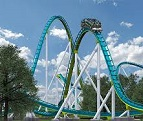
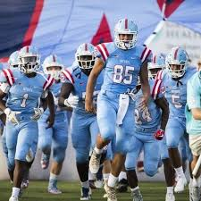

Summer Vacation
Carowinds

One thing I did in the summer was I went to Carowinds in North Carolina.
I went with my brother, my two sisters and my dad.
It was around 90 degrees outside, It was really hot.
Instead of riding the rides first, we went to the other side where the water park is.
The water park cooled us down for a bit, we went to ride rides and have some fun.
After a long day at carowinds we went to get food and go home, I really enjoyed my day there.
Football

I was really busy with football this summer.
I had to wake up at 7:30 am monday through saturday mostly everyday.
We had 7 on 7 tournaments this summer, that was really fun.
One of the best tournamets we went to was the Cam Newton camp.
We woke left at 5:30 in the morning and played football all day.
Practice everyday in the summer was hard but its gonna be worth it, hopefully well have a better season this year.
Atlanta Trip
I also went to Atlanta this summer.When we got there we went to Lenox Square mall.There mall is way better than the greenville Haywood mall.
Later on in the day we went downtown, to get ice cream and go eat.The bulidings in Atlanta are really nice.We didnt stay long, we went home around 5.
Going to carowinds, atlanta, and having football almost everyday was my biggest highlights this summer.